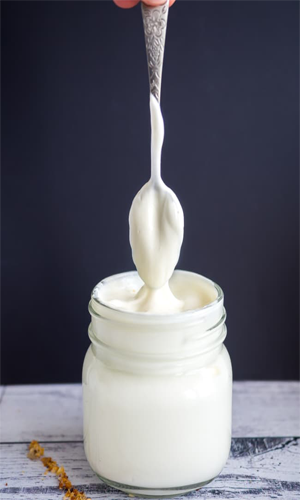

Yogurt
Yogurt, also spelled yoghurt, yogourt or yoghourt, is a food produced by bacterial fermentation of milk.The bacteria used to make yogurt are known as yogurt cultures. The fermentation of lactose by these bacteria produces lactic acid, which acts on milk protein to give yogurt its texture and characteristic tart flavor.Cow's milk is commonly available worldwide and, as such, is the milk most commonly used to make yogurt.